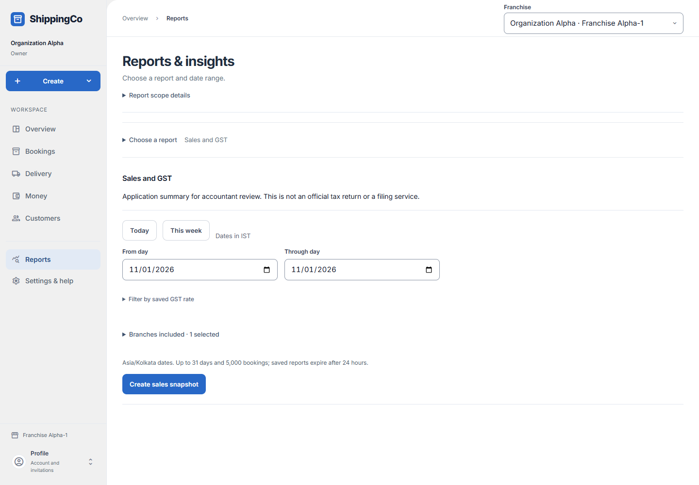

Sales and GST
What this helps you do
- Review billed amounts, saved GST and subsequent financial changes.
Open this feature
- Reports > Choose a report > How much did we bill?.
- Check the active branch first. Available actions depend on your role and the selected record.

Create sales snapshot
- Choose Today, This week or inclusive From day and Through day in IST, up to 31 days.
- Filter by saved GST rate is optional. A fraction such as 5/100 filters existing saved rates; it does not change a tax rate.
- Expand Branches included only when needed and select permitted branches. Active branch stays included. Accept a configured report scope where offered for a new report.
- Create sales snapshot, review totals, GST groups and booking rows, then Load more sales as needed. Download matching sales CSV requires export access.
Inspect and act on evidence
- View saved evidence compares original and report amounts, corrections and statement references. Collections are net money applied to the bookings; unused advance remains separate.
- Reload current financial evidence before preparing a change. A saved report stays unchanged. Switch to the booking’s branch before managing another branch’s booking.
- Where permitted choose Action and real Approval evidence reference, then review reductions in rupees. Refund requires Actually refunded and Returned-to evidence reference. Confirm financial evidence records evidence; it does not send money. Complete independent review in Financial approvals where required.
- Open linked statements, or Issue account statement where offered for eligible unissued shipments without monthly terms. Monthly statements are managed in Customer accounts. Statements group charges, not a new sale.
- This is an application summary for accountant review, not an official GST return. Up to 5,000 bookings; saved reports expire after 24 hours.
Fields and when to use them
These fields belong to the actions above. Complete the fields for your selected action; optional filters may stay blank.
- From day: First day of the report. Required.
- Through day: Last day of the report. Required. Up to 31 days per report.
- Saved GST rate fraction (blank for all, e.g. 5/100): Filter by the fraction saved with bookings. For example, 5/100 means five percent. This filters existing records; it does not set a tax rate. Optional.
- Included franchises: Branches to include from those you can access. Active branch stays selected. Scope selection does not grant access.
- Action: Cancellation, Discount, Correction or Refund. Required choice when changing financial evidence.
- Approval evidence reference: The real approval record supporting the change. Required. It is not a free pass around the approval workflow.
- pre tax reduction (₹): The reviewed reduction in charges before tax. For Cancellation, Discount or Correction.
- taxable reduction (₹): The reviewed reduction in the amount on which tax was calculated. For Cancellation, Discount or Correction.
- cgst reduction (₹): The reviewed reduction in CGST. For Cancellation, Discount or Correction.
- sgst reduction (₹): The reviewed reduction in SGST. For Cancellation, Discount or Correction.
- igst reduction (₹): The reviewed reduction in IGST. For Cancellation, Discount or Correction.
- rounding reduction (₹): The reviewed change to the rounding amount. For Cancellation, Discount or Correction.
- Actually refunded (₹): Money already returned to the customer. For Refund. Recording it does not send money.
- Returned-to evidence reference: The actual record showing where the refund was returned. For Refund. Use real evidence.
If you need to retry
- No records: check branch, account or customer and filters. Use Load more where offered before deciding a record is missing.
- Invalid or missing value: read the form message, correct the draft, then review amounts and references again.
- Uncertain save: use the offered retry for the same request. Do not create a second payment, return, expense or application to guess whether the first saved.
- Changed evidence or policy: refresh current records and review them before a new request. A saved report retains its captured figures; create another report for current results.
How this guide was checked
Checked against the current app code on 1 November 2026. This explains the current screens, not planned features.